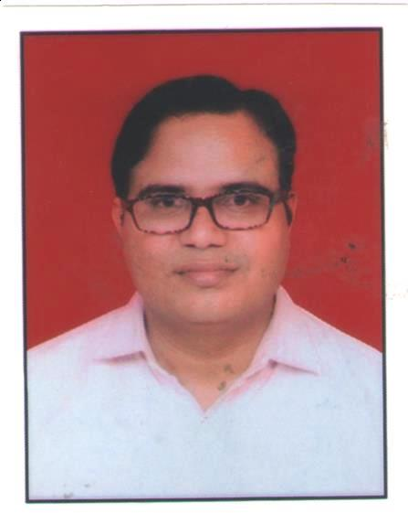

SATYA NARAYAN TAZI
Projects

Address(Home)
C/o N.K. Joshi, Plot no 3, Panchwati Colony ,Adarsh Nagar Ajmer (Rajasthan) - 305001
Designation
Assistant Professor
Phone
9460333407
satya.tazi@ecajmer.ac.in
Education
2001-2005
BE:
Engineering College Kota
Specialization:
Computer Engineering
Research Advisor:
2011-2013
M.Tech:
Government Engineering College Ajmer
Specialization:
Enhance Matching in Multi - Dimensional Image Reconstruction Using Stereo Image Sequences
Research Advisor:
Mr. Vinesh Kr. Jain
2016-
Phd:
Malaviya National Institute ofTechnology Jaipur
Specialization:
Hand Gesture Recognition
Research Advisor:
Dr. S.K. Vipparthi
Employment History
july-2005 to june-2006
Engineering College Kota
Guest Faculty
Oct-2006-
Government Engineering College Ajmer
Assistant Professor
Research Interests
Computer Architecture,Digital Image Processing,Design Analysis and Algorithm,HPSC,Grid/Cloud Computing,Computer Programming Language
Master's Thesis Guided
- Reshma praveen, “Analysis and Measurement of Non-Invasive Medical Image Defects Through Reliability Computing of Image Data” , Since July 2013 : Thesis : Completed
- Himanshu Mathur,"An Adaptive Approach For Minimizing Server Energy Consumption with HEROS task Scheduler in Green Cloud",Since July 2014 : Thesis : Completed
- Vikas Mishra,"Classification of Intrusion Detection System in Cloud Computing ",Since July 2014 : Thesis : Completed
- Anjali Sharma,"ENERGY SAVING IN GREEN CLOUD COMPUTING DATA CENTERS", Since July 2014 : Thesis : Ongoing
- Anupama Sharma,"Static and Dynamic hand Gesture Recognition", Since July 2015 : Thesis : Ongoing
- Jyoti Prakash Maan , "Reliability Calculation in Arbitrary Topology of Communication Network",Since July 2015 : Thesis : Ongoing
- Manoj Kumar," hand Gesture recognization using contour and Localization",Since July 2013 : Thesis : Ongoing
- Neha Khulshrestha ,"Recognize the hand gestures by simulating Neural Network based upon mean and standard deviation", Since July 2016 : Thesis : Ongoing
- Saurav Rawat, "A Comparative Study & Analysis of Image Restoration by Non Blind Technique" Completed
Journal Publications
- S. N. TAZI, MUKESH GUPTA, AKANSHA JAIN,"A SURVEY ON APPLICATION OF NATURE INSPIRED ALGORITHMS",International Journal of Computer Science Engineering and Information Technology Research (IJCSEITR) ISSN(P): 2249-6831; ISSN(E): 2249-7943 Vol. 4, Issue 4, Aug 2014, 33-40
- S. N. TAZI, PRAKASH MEENA, ISHITA SHARMA, A. K. DUBEY,NEETU SHARMA,"SOFTWARE EXPLOITS OF INSTRUCTION-LEVEL PARALLELISM FOR SUPERCOMPUTERS",International Journal of Computer Science Engineering and Information Technology Research (IJCSEITR) ISSN 2249-6831 Vol.2, Issue 4, Dec 2012 19-38
- Saurav Rawat, S.N.Tazi,"A Comparative Study & Analysis of Image Restoration by Non Blind Technique",International Journal for Research in Applied Science & Engineering Technology (IJRASET),Volume 3 ,Issue VI, June 2015, IC Value: 13.98, ISSN: 2321-9653
- A. K. Dubey, Prakash Meena, S. N. Tazi," Empirical Study to Analyse Security on the Basis of Boundary Edges",IJARCSSE,Volume 2, Issue 7, July 2012,190-194
Conference/Workshop Publications
- Rastogi, Garima, Satya Narayan, Gopal Krishan, and Rama Sushil. "Deployment of Cloud Using Open-Source Virtualization: Study of VM Migration Methods and Benefits." In Big Data Analytics, pp. 553-563. Springer, Singapore, 2018.
- Maan, Jyoti Prakash, and Satya Narayan Tazi. "Reliability calculation in arbitrary topology of communication network." In Advances in Computing, Communication & Automation (ICACCA)(Fall), 2017 3rd International Conference on, pp. 1-7. IEEE, 2017.
- Parveen, Reshma, Satyanarayan Tazi, and Anil Kumar Dubey. "Medical Image Defects Investigation Through Reliability Computing." In Advances in Computer and Computational Sciences, pp. 639-648. Springer, Singapore, 2017.
- Mishra, Vikas, Vinay Kumar Vijay, and Satyanaryan Tazi. "Intrusion Detection System with Snort in Cloud Computing: Advanced IDS." In Proceedings of International Conference on ICT for Sustainable Development, pp. 457-465. Springer, Singapore, 2016.
- Mathur, Himanshu, Satya Narayan Tazi, and R. K. Bayal. "Cloud Load Balancing and Resource Allocation." In Proceedings of the Second International Conference on Computer and Communication Technologies, pp. 745-753. Springer, New Delhi, 2016.
- CPJain, SNTazi,"Design and Implementation of FFT processor using VHDL",National Conference on Network Security and Distributed System,GECA,9-10 Jan 2014
- Rajesh Jangid, S.N.Tazi,"Dynamic Performance Analysis of DSR Routing Protocol in MANET Using NS-2",International Journal of Computer Applications® (IJCA) (0975 – 8887) National Seminar on Recent Advances in Wireless Networks and Communications, NWNC-2014
- Parveen, Reshma, and Satyanarayan Tazi. "Analysis and Measurement of Medical Image Defects through the Reliability Computing of Image data." In Proceedings of the International Conference on Advances in Information Communication Technology & Computing, p. 35. ACM, 2016.
- S. N.Tazi, and C. P. Jain. "Formal specification and verification of the SWP to improve the performance of multiple windows." In Issues and Challenges in Intelligent Computing Techniques (ICICT), 2014 International Conference on, pp. 453-458. IEEE, 2014.
- S. N.Tazi, and Vinesh Kr Jain. "Enhance matching in multi-dimensional image reconstruction using stereo image sequences." In Information Systems and Computer Networks (ISCON), 2014 International Conference on, pp. 33-38. IEEE, 2014.
- Jain, Akansha, Mukesh Gupta, and S. N. Tazi. "Comparison of edge detectors." In Medical Imaging, m-Health and Emerging Communication Systems (MedCom), 2014 International Conference on, pp. 289-294. IEEE, 2014.
- Gupta, Mukesh, S. N. Tazi, and Akansha Jain. "Edge Detection Using Modified Firefly Algorithm." In Computational Intelligence and Communication Networks (CICN), 2014 International Conference on, pp. 167-173. IEEE, 2014.
- Vikas Mishra, Himanshu Mathur, Satya Narayan Tazi," "Fifth International Conference on Advances in Computer Engineering – ACE 2014, p. 549-555 ,Mc-Graw Hill Education Professional
- S. N.Tazi, Deepika Verma, Vinesh Jain, A. K. Dubey, and Rakesh Rathi. "IMPROVING IMAGE RESOLUTION THROUGH THE CRA ALGORITHM INVOLVED RECYCLING PROCESS TO IMAGE RECONSTRUCTION.",David C. Wyld (Eds) : ICCSEA, SPPR, CSIA, WimoA - 2013 pp. 263–272, 2013. © CS & IT-CSCP 2013 DOI : 10.5121/csit.2013.3527
- S. N.Tazi, Anil K. Dubey, Vinesh Jain, and Rakesh Rathi. "Image ontology." In Emerging Trends in Computing, Communication and Nanotechnology (ICE-CCN), 2013 International Conference on, pp. 564-569. IEEE, 2013.
- Prakash Meena, S. N. Tazi, A. K. Dubey,"A prominent Approach towards secure software Engg For Security practices in Agile s/w process Model",MNNIT , Allahabad(IEEE),978-1-4673-0455-9/12/$31.00 ©2012 IEEE
- S. Trivedi, B. Nandwana, D. K. Khunteta and S. Narayan, "K-means clustering with adaptive threshold for segmentation of hand images," 2017 7th International Conference on Communication Systems and Network Technologies (CSNT), Nagpur, 2017, pp. 183-187.doi: 10.1109/CSNT.2017.8418534.
- S. Trivedi, D. Kumar Khunteta and S. Narayan, "Hand segmentation using modified K-means clustering with depth information and adaptive thresholding by histogram analysis," 2017 IEEE International Conference on Power, Control, Signals and Instrumentation Engineering (ICPCSI), Chennai, 2017, pp. 1607-1609.doi: 10.1109/ICPCSI.2017.8391983
Expert Lectures/Workshops
- Expert Lecture Taken at Government Engineering College Jhalawar on dated 20/2/2016
- Expert Lecture Taken at Government Engineering College Ajmer in RTTICC - 2016 on dated 25/2/2016.
- Expert Lecture Taken at Government Engineering College Jhalawar on dated 13-14/04/2018
- KeyNote Speaker, Second International Conference on Innovati ve Research in Engineering Science & technology(IREST - 2017) , 7 - 8, April 2017,Eternal University ,H.P .
- Expert Talk at Nathdwara Institute of Engineering College from 26-28 Nov 2019
- Expert Talk at Government Women Engineering College Ajmer on 29 Jan 2020
Conference/ Seminar/Short Term Training Organized
- Network Security and Distributed System, ECA AICTE & TEQIP - II, 9/01/14 to 10/01/2014
- Open Source Technology and Tools, ECA, TEQIP - II, 30/07/2013 to 03/08/2013
- Tcp/Ip Based Computer Network, ECA, NITTTR, 06/05/2013 to 10/05/2013
- The role of telemedicine and IT in the redevelopment of medical system, ECA, TEQIP - II, 08/03/2013
- DB2/ Web Server , ECA, IBM, 10/11/2010
- Recent Advancement in Engineering & Technology ECA - 26/04/ 2008
- Emerging Trends and Applications in Computer Engineering ECA - 13 /04/2007
- STP on ” promoting excellence in research ”, ECA, TEQIP - II, 4/02/2014 to 8/02/2014
- STC On”RTTICC - 2016”, ECA, TEQIP - II, 23/2/16 to 3/3/16
- Cloud Azure Workshop, ECA, Microsoft, 24/12/2015
- Conference on “ICCS 2016”, RTU,KOTA IAASSE,RTU Kota, 13/8/16 to 14/8/16
- Conference on “ICCM 2016”, RTU,KOTA IAASSE,RTU Kota, 28/12/16 to 29/12/16
- Conference on “IoT 2017”, MNIT , Jaipur, IAASSE, MNIT,Jaipur, 26/05/2017 to 27/05/2017
- Organize ICSPCT 2014, E C A, TEQIP - II, 12 July 2014 to 13 July 2014
- Organizing National Conference on SCNDS - 2014, E C A, TEQIP - II & A I C T E, 9 Jan 2014 to 10 Jan 2014
- Organizing National Seminar on NWNC - 2014, E C A A I C T E, 17 Jan 2014 to 18 Jan 2014
- STC ICT32 optical fibers: Potential and applications,18 th Dec 2017 to 22 nd Dec 2017 Under NITTTR, Chandigarh
Workshops/FDP/Trainings Participated
- Open Source Technology and Tools ECA 30/07/2013 to 03/08/2013
- Tcp/Ip Based Computer Network NITTTR, Chandigarh, 6/05/2013 to 10/05/2013
- Cloud Computing& its Application in Engineering and Sciences(CCAES - 2013), RTU ,KOTA, 20/04/2013 to 24/03/2013
- Effective teaching/learning of Computer Programming IIT ,BOMBAY, 28/06/10 to 10/07/10
- V.B.NET,NITTTR, Chandigarh,27/07/09 to 31/07/09
- Sun Java Programming Language (SL 275) ,Sun Microsystems, CEG ,Jaipur, 07/01/08 to 11/01/08
- National workshop on e - Governance -2011,Central University of Rajasthan,20 December 2011
- National workshop on Research Methodology, ECA, 08 April 2012
- National Seminar on Information Security, IIIM Jaipur, 31 January 2007
- LoopHole-Ethical Hacking Workshop, GEC.Ajmer April 16-17,2012
- Science & Technology Dictionary Commission By MHRD,GEC.Ajmer June 06-07, 2012
- International Workshop on Radiation Hazards(Under TEQIP), GEC.Ajmer, Jan-28-29,2013
- IEEE International Conference on Emerging Trends in Computing, Communication & Nanotechnology Engineering (ICECCN-2013) INFANT JESUS College of Engg&Tech , Thoothukundi (Tamilnadu), 25-26 March 2013
- National Conference “Network Security & Distributed System” ECA 9 - 10 Jan 2014
- FDP on” Curriculum development and Execution” ECA 27 - 31 Jan 2014
- Tcp/Ip Network NITTTR, Chandigarh 16 - 20 March,2015
- Technical Terminology in Engineering MHRD, GEC.Ajmer Feb, 05 - 06, 2015
- International Research workshop on Recen t Computing Technologies Regional College,Jaipur Dec, 22 - 23,2014
- FDP:Optimization Techniques using nature inspired Algorithms for Engineering Applications RTU,Kota Jan, 19 - 23,2015
- Countinuing Education Programme as Summer Faculty Research Fellow Programme IIT ,Delhi 29 - 05 - 2015 to16 - 07 - 2015
- FDP: Information Security& Challenges(ISC’15’) MNIT Jaipur Nov 16 - 20 ,2015
- STC: Science & Technology to save Environment GEC.Ajmer Nov 23 - 27, 2015
- STC:RTTICC - 2016 ECA 23/2/16 to 3/3/2016
- STC:Green Computing ECA 1/2/2016 to 5/2/2016
- Multimodal and Advanced Biometrics Authentication MNIT Jaipur 2/1/2017 to 11/1/2017
- Cyber Security Awareness ECA 16/3/2017 to 18/3/2017
- Machine Learning Trends,Perspectives& Prospects, IIT BHU,18-23 Sept 2017.
- Advanced Pattern Recognition Techniques, NIT Jaipur,26-03-2018 to 30-03-2018
Recognitions And Certificates
- Achieved an Award of $100(Hundred Dollar) and Appreciation Certificate in" IEEE Society on Social Implications of Technology” for obtaining the most likes in the 2013 SSIT Logo Design Contest and growing the SSIT Contact Community .
Administrative Responsibilities
-2014-2015
Hostel Warden
-Coordinator(2014-15)
College Website Developer
-Coordinator(2017-2018)
Training and Placement
-Coordinator(2014-2018)
Tech Fest
-Member(2015-2018)
AICTE /RTU/MHRD
-Additional Co-coordinator
Digital India
-Coordinator
ERP Cell
-System Admin (2017-till)
QEEE Cell
-Head
Startup Cell
-In-charge at Department Level(2015-16)
Guest faculty
-Coordinator at Department Level(2016-2018)
Post Graduation(M.Tech)
Related Links
Google Scholar Link -- SatyaNarayan Tazi
Other Informations
- Session C hair in ICTCS - 2014 at 14 - 16,2014, CSI - ACM Udaipur – india .
- TPC Members on Following Conferences: INDIA - 2015,IC3T - 2015,ICICT - 2015,IC4SD - 2015,ICTIS - 2015
- Publicity and Finance Chair 2016: International Conference on Cyber Security (ICCS - 2016) ,RTU ,KOTA
- Session Chair in International Conference on Computer, Communication and Computationa l Sciences (ICCCCS - 2016), held at Aryabhatta College of Engineering & Research Center, Ajmer, India during August 12 - 13,2016.
- Session Chair in International Conference on Computer and management (ICCM - 2016) ,RTU ,KOTA during 28 - 29 Dec 2016.
- Publicity and Finance Chair 2016: International Conference on Computer and management (ICCM - 2017) ,Apex College jaipur ,KOTA